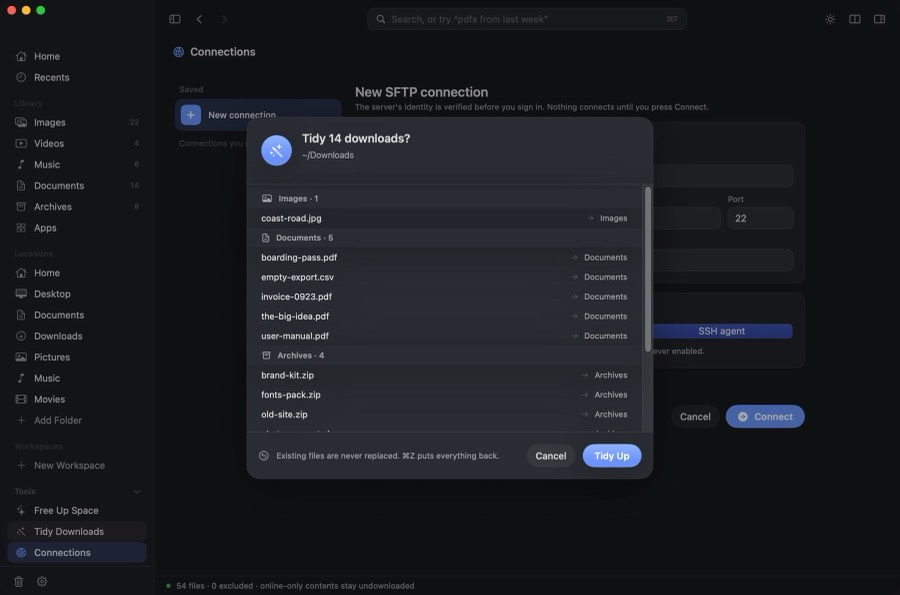
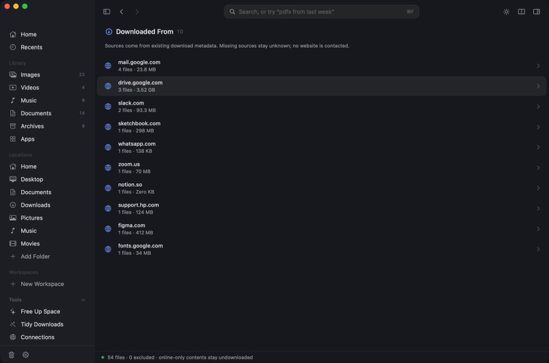

How to clean up your Downloads folder on Mac
Updated
How do I tidy my Downloads folder?
- Click Tidy Downloads in the MacEx sidebar.
- Review the list. Each file shows the folder it will move to.
- Confirm. Files are sorted into folders such as Images, Documents and Archives inside Downloads.
- Changed your mind? Press ⌘Z to put everything back.

Will it overwrite or lose files?
No. Existing files are never replaced. Tidy Downloads runs only when you ask, and automation rules are off until you turn them on.
How do I see where a download came from?
MacEx groups downloads by the website they came from, for example Gmail, Slack or Drive, and you can search by source. Finder shows “Where from” for one file at a time in Get Info.

Can I tidy Downloads without an app?
Yes, by hand. In Finder, open Downloads, switch to list view (⌘2) and sort by Date Added to see what arrived recently, or by Kind to group installers, PDFs and images. Select a group and drag it into a folder. To check where a single file came from, select it and press ⌘I; Where from shows the address, if your browser saved one.
How do I free up space from old downloads?
Use Free Up Space. It lists old installers, forgotten downloads, old screenshots, big old videos and duplicate files. You review everything, and only the files you select move to Trash. Read how to find duplicate files on Mac.
Related
MacEx runs on macOS 14 or later, Apple silicon and Intel. One-time purchase, no account.